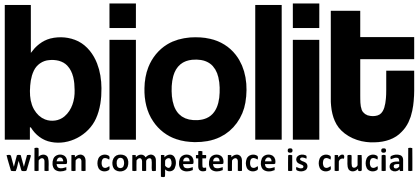

CV för Henrik Roos
Utvecklare med stort intresse för test
Utvecklare med stort intresse för test
Henrik är en driven testanalytiker med bakgrund som systemutvecklare i flertal olika språk, med tiden har han i allt större utsträckning rört sig mot avancerad testdisciplin. Henriks inriktning är SOA ett område som han behärskar mycket väl.
Henriks utvecklarperspektiv är att designa och skapa välskrivna automatiserade tester, att ta fram riktlinjer hur bygg- och testprocessen skall bli bättre, utföra integrationstester och optimering av prestandakrävande metoder. I flera uppdrag har han förankrat testplaner som följer testdriven utveckling (TDD) med Continuous Integration (CI) som processer.
Som person är Henrik en engagerad medspelare, glad, lyhörd och ansvarsfull. Andra kännetecknande egenskaper är att han har en hög analytisk förmåga samt att han ständigt utforskar nya tekniker.
Innan 2005 var han i huvudsak student och studerade matematik men parallellt drev han eget företag inom web och print. Flertal hemsidor, broschyrer, reklamblad, visitkort har han själv tagit fram och sålt. Adobe Creative Suite med främst InDesign, Illustrator och Photoshop hantera han väl.
Henrik is a qualified test manager with good coordination skills and understanding of different perspectives. He has easy to understand the activities amd good negotiation skills. He is diplomatic and has ability to get many people to interact. Overall he has bility to maintain focus - sustainable but diplomatic.
Henrik vill man ha med i sitt team! Han bidrar med bred teknisk kompetens, är genuint intresserad och är inte rädd för att ta tag i de svårare frågorna. Henrik angriper problemen strukturerat, är noggrann, söker en konstruktiv väg och jobbar alltid för en bra lösning och en god stämning! Jag ger mina varmaste rekommendationer!
| utb | utv. | krav | utv. | utv. | zelda | utv. | utv. | zimon | i | test | krav | test | test | utv. | test | zid | ||||||||||||||||||||||||||||||||||||||||||||||||||||||||||||||||||||||||||||||||||||||||
| 1 | 2 | 3 | 4 | 5 | 6 | 7 | 8 | 9 | 10 | 11 | 12 | 1 | 2 | 3 | 4 | 5 | 6 | 7 | 8 | 9 | 10 | 11 | 12 | 1 | 2 | 3 | 4 | 5 | 6 | 7 | 8 | 9 | 10 | 11 | 12 | 1 | 2 | 3 | 4 | 5 | 6 | 7 | 8 | 9 | 10 | 11 | 12 | 1 | 2 | 3 | 4 | 5 | 6 | 7 | 8 | 9 | 10 | 11 | 12 | 1 | 2 | 3 | 4 | 5 | 6 | 7 | 8 | 9 | 10 | 11 | 12 | 1 | 2 | 3 | 4 | 5 | 6 | 7 | 8 | 9 | 10 | 11 | 12 | 1 | 2 | 3 | 4 | 5 | 6 | 7 | 8 | 9 | 10 | 11 | 12 | 1 | 2 | 3 | 4 | 5 | 6 | 7 | 8 | 9 |
| 2005 | 2006 | 2007 | 2008 | 2009 | 2010 | 2011 | 2012 | 2013 | ||||||||||||||||||||||||||||||||||||||||||||||||||||||||||||||||||||||||||||||||||||||||||||||||
Mawell
—
Stockholms läns landsting
3 månader, 2012-11 — 2013-01
Samma projekt som Henrik lämnade för ett par års sedan men nu i nytt omtag. [se uppdrag #8]
Samma kund, samma mål att ersätta en befintlig mycket dyr lagringslösning med open-source lösning. Henrik kunde återvända de krav som ursprungligen han tog fram innan, vilket blev en stabil accepts krav-platta. För att hjälpa utvecklingsteamet så dammade Henrik av en gammal testmotor som använts i projekts början, skriven helt i egen Java.
Henrik såg till att den gick att köra i testmiljön och gav tydliga testresultat i Jenkins Continuous Integration motor. Den motorn blev en helautomatisk systemtestmiljö som testade alla positiva och några alternativ flöden i den nya och gamla lagringslösningen. Projektet avslutades denna gång med framgång och den helautomatisk systemtestmiljö som togs fram i projektet ligger idag som ett bra stöd för förvaltningen.
Mawell
—
Sveriges Kommuner och Landsting
5 månader, 2012-06 — 2012-10
Efter införandet av den nya patientsäkerhetslagen som trädde i kraft har det ställts högre krav på att öka säkerheten i vården. En av de metoder som ökar säkerheten är strukturerad journalgranskning som är framtagen av SKL. Strukturerad journalgranskning är en etablerad metod för att identifiera skador som oftast inte uppmärksammats på annat sätt. Metoden går ut på att strukturerat granska journaler från redan avslutade slutenvårdstillfällen.
Henrik tog fram ett verktyg för att kunna arbetat systematiskt med strukturerad journalgranskning kring skada. Hans roll i projektet var många då det bara var kunden, säljaren och Henrik som var i teamet. Han tog fram projektbeskrivning, tidsestimat, kravspecifikation, design av den tekniska lösningen, han skrev helt själv första skarpa versionen.
Datat använde SKL i sitt arbete med strukturerad journalgranskning kring skada som utföll i en rapport som uppmärksammades i SVT:s ABC nyheter
Mawell
—
Region Sjælland
3 månader, 2012-03 — 2012-05
Traditionell manuell högnivå testning för en komplex röntgenprodukts-integration i de befintliga journalsystemen på sjukhusen som tillhör Danska Region Sjælland. Det var många olika produktleverantörer som hade ansvar och de övergripande kraven var högt skrivna anpassade på avtalsnivå. Hela projektteamet fick tillsammans initialt lappa ihop gapet mellan kraven, leverantörerna, kunden och produkten med empiriskt verifierbara data och krav som de kunde utgå ifrån i testerna.
Under den tiden som Henrik var med i projektet tog de fram teststrategi, utförde datainsamling med hjälp av workshops, intervjuade nyckelpersoner och skrev de första manuella testspecifikationer.
TPG Objektfabriken (nuvarande Objektfabriken)
—
SEB IT
9 månader, 2011-06 — 2012-02
Henrik satt i det stora One IT Roadmap projektet som SEB inte avslutade. Mycket intressant projekt på många sätt. Bra projektstyrning, alla visste vad de skulle göra, extremt fina krav, nedbrutna till specifikationer som utveckling och test kunde följa slaviskt. Om det var otydligt i specifikationen så fanns det en öronmärkt designperson på plats att fråga.
Henrik satt i testcore-temaet för SOA tjänsterna. Gruppen bestående av 5-8 personer testade av ca 60 tjänster i varje sprint (2 veckor).
Modul 1 (nuvarande Softronic)
—
Stockholms läns landsting
8 månader, 2010-10 — 2011-05
I Stockholm sparas det i genomsnitt 25 000 st. labbsvar per dag mot en central lagringstjänst på SLL. Dagens lagringstjänst använder Oracles produkt HTB. Projektets beskrivning är att byta ut HTB lösningen till en egenutvecklad lösning med öppen källkods komponenter utan att nyttjarna behöver ändra något i sin anslutning mot tjänsten. Syftet var att spara pengar på licenskostnader.
Henriks roll var att ta fram tydligt underlag till utvecklingen och att leda testarbetet. I början av projektet utförde Henrik empirisk studie med intervjuer och eftersökande av dokument som mynnade ut till en gedigen kravspecifikation med användningsfall.
Modul 1 (nuvarande Softronic)
—
Stockholms läns landsting
6 månader, 2010-04 — 2010-09
Tjänsten Nationell Patientöversikt (NPÖ) gör det möjligt för behörig vård- och omsorgspersonal att med patientens samtycke ta del av journalinformation som registrerats hos andra vårdgivare. Samordning av vårdinsatser underlättas och en helhetsbild av patienten ger ett bättre beslutsunderlag för diagnos, behandling och uppföljning.
Uppdraget var att flytta en del av journalinformation ifrån Stockholm till tjänsten NPÖ via en integrationspunkt (JBoss ESB). Henriks roll var att testa hela flödet och att vara ett stöd i utveckling och i informatiksarbetet för att tydliggöra kraven mot den givna 13606/RIV standard. Han byggde upp en automatiserad testprocess med hjälp av jUnit, XPath, Maven och Google spreadsheet.
Modul 1 (nuvarande Softronic)
—
PTK
8 månader, 2008-11 — 2009-06
En webbaserad rådgivningstjänst för individuell rådgivning inom försäkring och pensionssparande riktad mot alla personer i Sverige som omfattas av ITP. Rådgivningstjänsten ger de försäkrade en samlad bild av deras sjuk-, efterlevande- och pensionsförsäkringar enligt lag, avtal och individuella försäkringarna.
Henriks roll var att utveckla den optimeringskomponent som tar fram hur användarnas premier ska placeras bäst i olika bolag och fonder. Förutom avancerad implementation ställdes det stora krav på enhetstest och framtagande av testdata för belastnings- och regressionstest.
Modul 1 (nuvarande Softronic)
—
Bredbandsbolaget
3 månader, 2008-08 — 2008-10
Ett projekt som syftade till att förkorta Bredbandsbolagets ledtid för att få ut ny information på den externa webben samt att förenkla för redaktörer att påverka layout och innehåll på sidor. Henriks roll var att strukturera information, testa och utveckla komponenter i IBM Lotus Workplace Web Content Management.
Modul 1 (nuvarande Softronic)
—
Handelsbanken
3 månader, 2007-12 — 2008-02
Nyutveckling och förvaltning av webbtjänst för publikt tillhandahållande av en placeringsguide för handelsbankens privatkunder. Utvecklingen skedde i .NET och bestod av alla delar i kedjan från databas till gränssnitt.
Modul 1 (nuvarande Softronic)
—
Karolinska Universitetssjukhuset
4 månader, 2007-08 — 2007-11
Ett datastöd för administrativ hantering av provtagning för att upptäcka tarmcancer på ett tidigt stadium. Alla äldre personer som bor i Stockholm blir erbjudna att bli testade gratis. Detta system hanterar just denna process, från utskick till utfall av provtagningen.
Systemet var ett webbaserat system med många funktioner där plattformen var .NET. Henriks arbetsuppgifter var att utveckla och testa de gränssnitt och urvalsfunktioner som hanterar utskick till personer som erbjuds att bli testade samt eventuella återbesök.
Modul 1 (nuvarande Softronic)
—
NASDAQ OMX | Nordic
6 månader, 2007-02 — 2007-07
Förstudien omfattade framtagande av krav och tidsestimering för en webbtjänst som bestod av ett arbetsflöde i InfoGlue (Content Management System).
Fimare (Enskild firma)
—
Lidh Reklam
1 år 10 månader, 2005-04 — 2007-01
Ett helhetsåtagande av ett nytt affärssystem för Lidh Reklam med arv från det befintliga systemet skrivet i COBALT. Det var Henriks första riktigt stora uppdrag. Han skrev ett avtal med en tunn kravspecifikation med icke empiriskt verifierbara krav. I slutändan resulterade det i att projektet inte kom till avslut vilket han drog stor lärdom av och också är den största anledningen till varför han har specialiserat sig inom krav och test.
Privat, (öppen källkod GPL-3.0)
—
WordPress
2013-02 — nu
Med en enkelt syntax t ex [imdb:title] ersätts taggarna med data från IMDb Mobile Applications (ett publik RESTful API som exponera IMDb:s databas). Koden är väl dokumenterad, testad och innehåller inga checkstyle errors. Code coverage ligger på 100%. Testmiljön som drivs av Jenkins är helautomatiserad och testar pluginets kodförändringar i 14 olika WordPress releaser.
IT Support
—
ZIFF
2 månader, 2006-06 — 2006-07
Henrik hjälpte till med praktiskt IT jobb på östafrikas största filmfestival i Tanzania. Bland annat byggde de ett ackrediteringssystem för alla gäster. Tog hand om ljud och ljus vid ett antal events.
Stockholms universitet, Stockholm
2003 — 2005
Mälardalens högskola, Västerås och Eskilstuna
1998 — 2003
|  | |
|---|---|
| Kontaktperson | Hans Markebrant |
| Mobil | 070-91 05 182 |
| hans.markebrant@biolit.se |